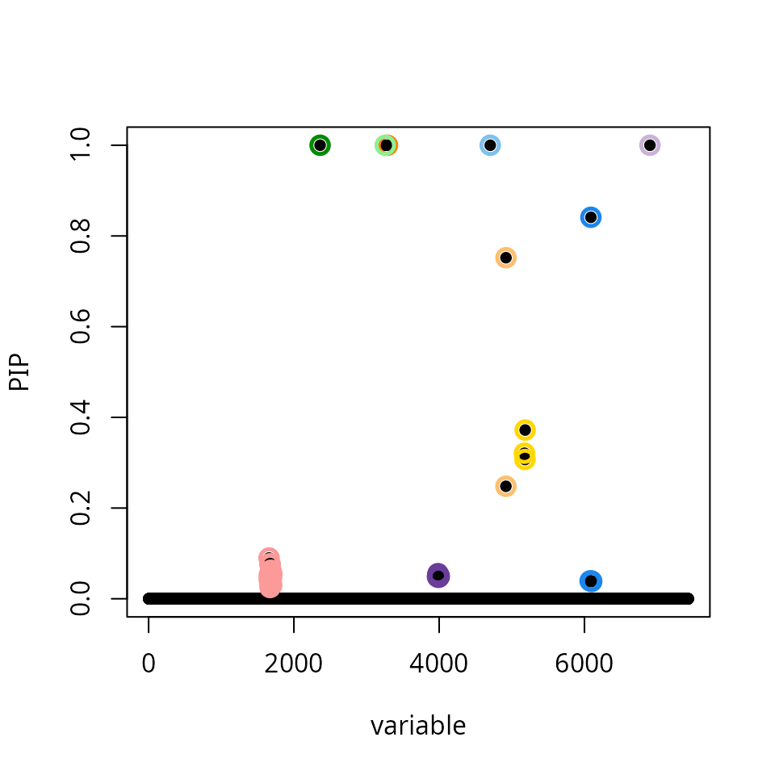
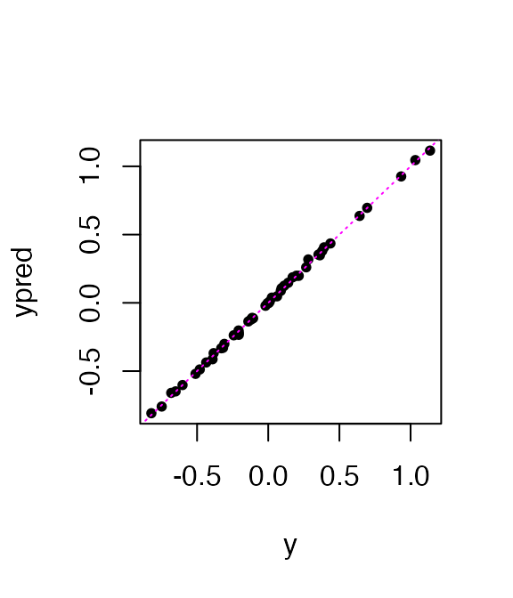
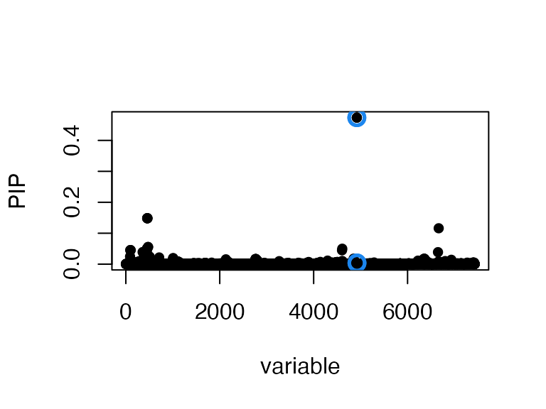

This is vignette reproduces an example from the Denault et al paper.
The data are normalized gene expression, and the goal is to finemap genetic variants for expression (eQTLs).
The original SuSiE procedure displays signs of misscalibration: the result is highly suspicious as we find 9 credible sets in a data set containing only 47 samples.
res_susie <- susie(X,y,L = 10,verbose = FALSE)
res_susie$sets$cs
# $L1
# [1] 4919 4920
#
# $L3
# [1] 6902
#
# $L4
# [1] 3258
#
# $L5
# [1] 1658 1660 1661 1665 1667 1668 1670 1672 1673 1674 1675 1676 1678 1679 1680
# [16] 1681 1682 1683 1691 1695 1697
#
# $L6
# [1] 4703
#
# $L7
# [1] 5174 5181 5184
#
# $L8
# [1] 3288
#
# $L9
# [1] 3978 3979 3980 3981 3984 3985 3987 3988 3989 3990 3991 3992 3993 3994 3996
# [16] 3997 3998 3999 4000 4001
#
# $L2
# [1] 455 456 457 462
#
# $L10
# [1] 2776 2778 2794 2796 2797
susie_plot(res_susie,y = "PIP")
Another clue is that the fine-mapped variants explain >99% of the variation in gene expression, which suggests overfitting.
ypred <- predict(res_susie,X)
pve <- 1 - drop(res_susie$sigma2/var(y))
round(100*pve,digits = 1)
# [1] 99.9
plot(y,ypred,pch = 20)
abline(a = 0,b = 1,col = "magenta",lty = "dotted")
Setting small = TRUE in the susie call uses a slightly
different SER (“single effect regression”) model that accounts for
uncertainty in the residual.
res_susie_small <- susie(X,y,L = 10,small = TRUE,verbose = TRUE)
# [1] "max change in alpha: 0.119335904719296"
# [1] "max change in alpha: 0.100648543923789"
# [1] "max change in alpha: 0.0613738133669603"
# [1] "max change in alpha: 0.0620310399693353"
# [1] "max change in alpha: 0.0281351435871187"
# [1] "max change in alpha: 0.0075382454460613"
# [1] "max change in alpha: 0.00505758524884178"
# [1] "max change in alpha: 0.000862698609791157"
# [1] "max change in alpha: 0.000645072364312882"
# [1] "max change in alpha: 0.000466397057786141"
# [1] "max change in alpha: 0.00018718973900669"
# [1] "max change in alpha: 0.000115533807608325"
# [1] "max change in alpha: 6.66692181238247e-05"
res_susie_small$sets$cs
# $L1
# [1] 4919 4920 4922 4923The results are much more plausible as this version of SuSiE only outputs a single CS:
susie_plot(res_susie_small,y = "PIP")
A SNP in this CS explains, more plausibly, about 45% of the variance in expression: